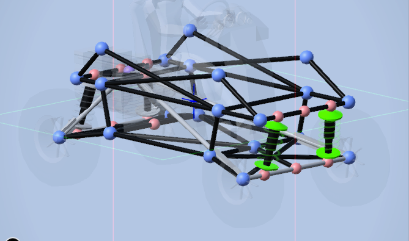
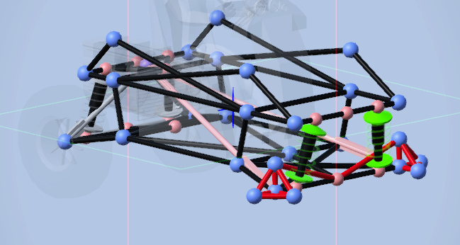
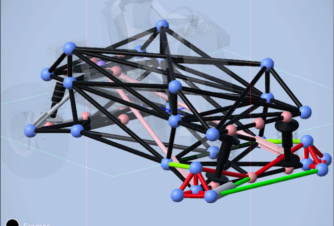
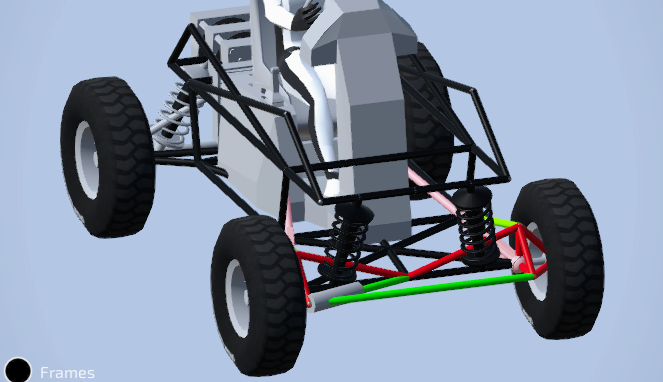
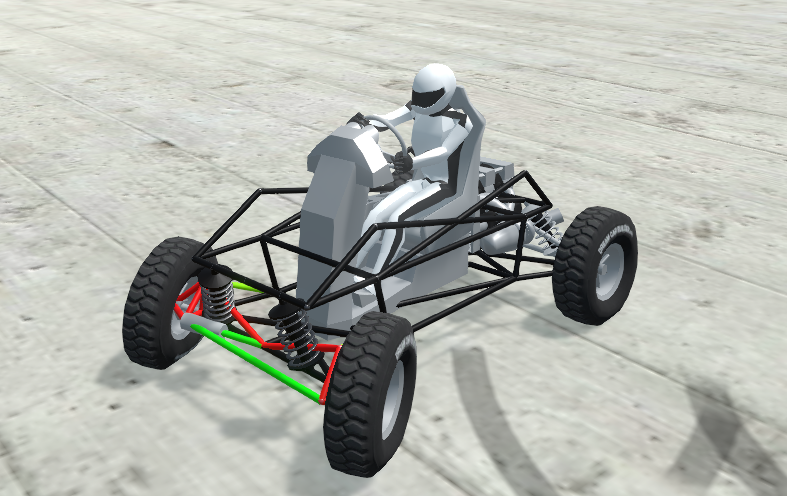

Steering is very annoying to do and glitches often if you dont do it right. The type im doing can be applied anywhere but im showing it on live axle. Without steering you cant really turn and im pretty sure turning is important for a car. I wont give an example of a frame because you should already have completed the suspension and frame tutorials.

Begin by deleting your current front wheels, so we can build the wheel brace that can swivel. Below is how you should build the wheel brace. It doesnt have to be this exact shape just make sure it only pivots left to right. Wheel brace is in red.

For this step turn off your symmetry mode and re enable after this step. Draw a bar connecting your 2 braces then 1 rod that connects from the midpoint to one of your braces. If your braces still swivel add an extra attachment point to the frame. What you need is in green.

Now just add your wheels. IMPORTANT: You will have to tune the rod max stretch and compression to get the wheels to turn correctly and not bug out. You may also have to invert your steering controls.

Here you can see the live axle steering working and tuned. If you wish to download this car the .car file is in the examples field.
